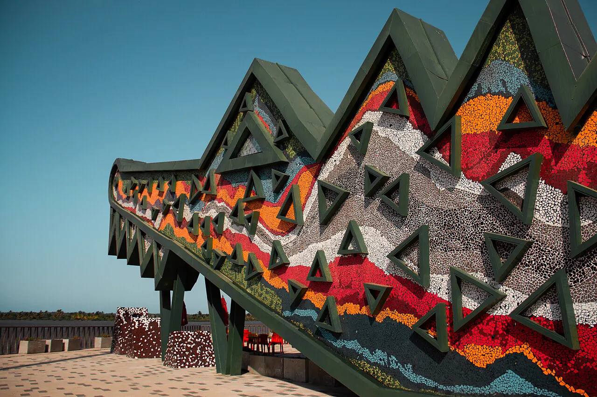
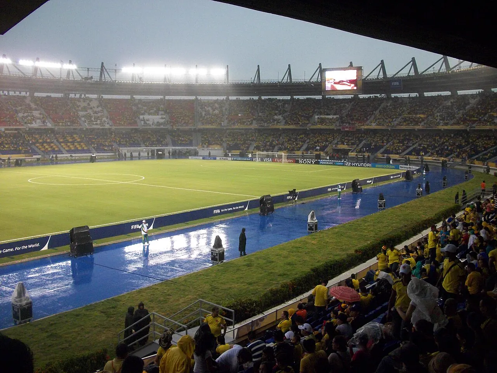
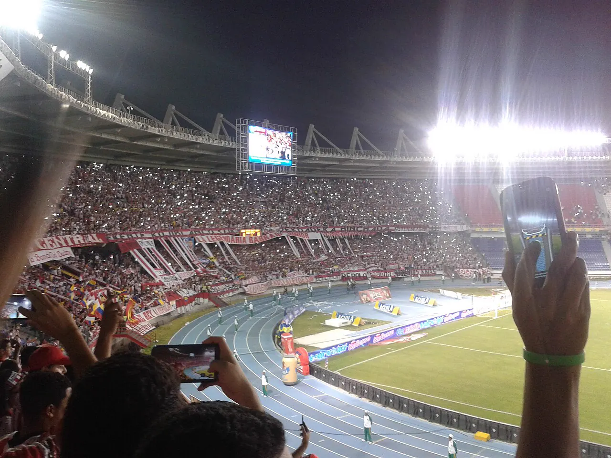
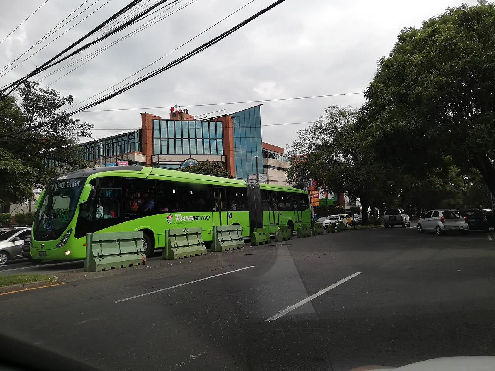
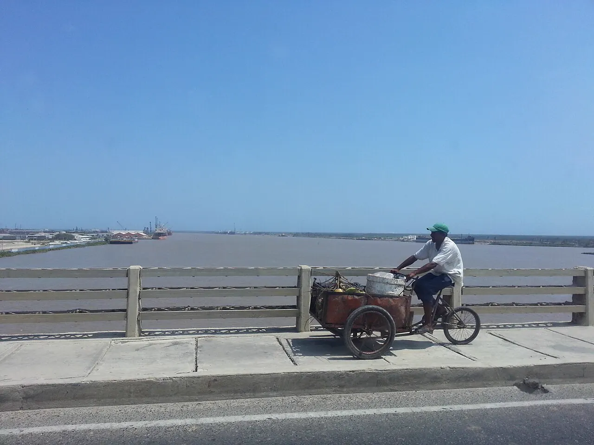
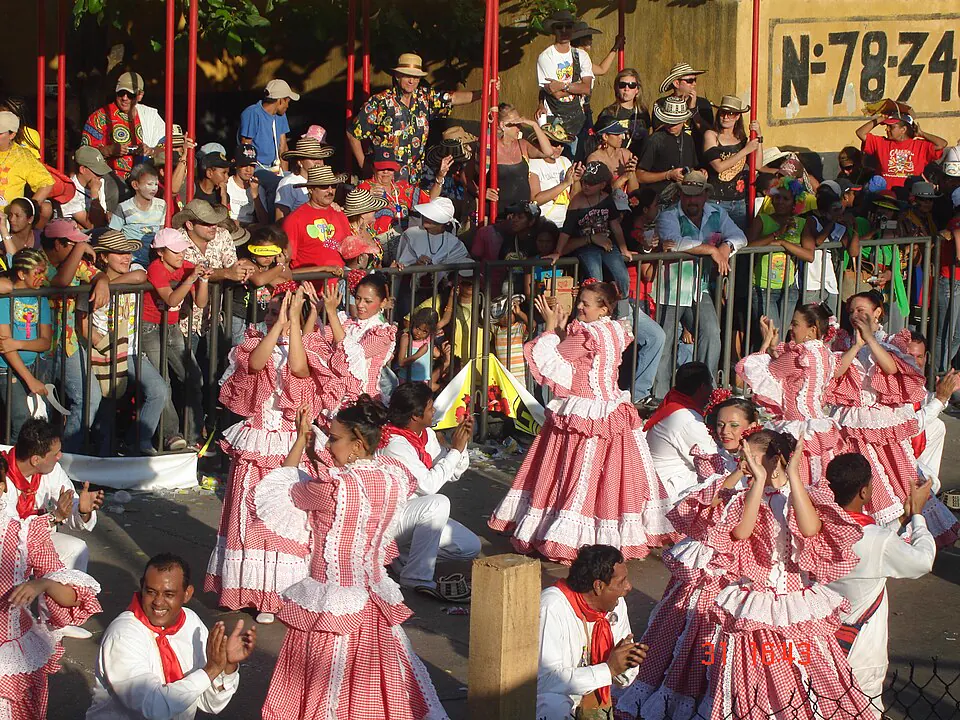

Plan urbano para Barranquilla
Escenario ficticio a 2034: siete componentes para que la ciudad funcione como sistema si recibe un Mundial.
Seis problemas de Barranquilla en 2026
Un Mundial no los crea: los agrava.
- Transporte público
Validaciones de Transmetro, 2019 a 2025.1
−54 % - Energía
Air-e sigue intervenida y hay apagones.2
Intervenida - Calor
Barrios pobres frente a barrios ricos.3
+5 °C - Arroyos
Basura sacada de canales y arroyos en 2026.4
14.200 t - Espacio público
Por habitante; el mínimo legal es 15.58
4 m² - Empleo
Ocupados en la informalidad, 2025.6
52,7 %

Causas y efectos en Barranquilla
Seis cadenas que alimentan un mismo problema central: la ciudad no funciona como un sistema.
Los 7 componentes del programa
Cuatro actúan en la calle, uno avisa y conecta, y dos sostienen el legado después de 2034. Detalle de cada uno en el simulador.
- A. Ciudad fresca y verdeAcción
- B. Ciudad que no se detieneAcción
- C. Moverse fácil y accesibleAcción
- E. El Mundial vende en el barrioAcción
- D. Ciudad que avisa y respondeConexión
- F. Legado que se vigilaBase
- G. Escuela de ciudadBase
Un partido en el Metropolitano, en 3 pasos
-
1. Alerta y drenaje en el arroyo
Los sensores del arroyo cercano al estadio envían la alerta por mensaje, voz y radio, y la cuadrilla de drenaje llega al punto.

-
2. Rutas de Transmetro desviadas
Transmetro y el bus colectivo cambian el recorrido y la información llega a las paradas y a los teléfonos.

-
3. Líderes de barrio y veeduría
Líderes formados guían a vecinos y vendedores, y la veeduría anota cuánto tardó cada respuesta.

Inclusión en los 7 componentes
No es un componente aparte. Estos cinco compromisos rigen cada obra y cada servicio.
- Participar antes de decidir
Las comunidades opinan antes de cada obra, no después.
- Accesibilidad desde el diseño
Probada con personas con discapacidad en cada recorrido.
- Nadie desplazado
Ninguna obra sin una solución acordada con sus organizaciones.
- Primero los barrios
Los de más calor, inundación y carencias reciben primero.
- Canales para todos
Alertas por voz, radio y líderes, con o sin internet.

Lecciones de 10 ciudades sede
Qué tomamos y qué evitamos. La letra indica el componente.
- Barcelona 1992
Primero el plan de ciudad; el evento solo fija la fecha.
F - Londres 2012
Un responsable del legado con metas sociales exigibles.
F - París 2024
Reutilizar lo que existe y recuperar un río visible.
A - Medellín 2010
Censar y pactar con vendedores antes de intervenir.
E - Brasil 2014
No prometer transporte sin proyectos maduros.
C
- Río 2016
No incumplir el saneamiento ni desalojar barrios.7
B - Atenas 2004
Ningún escenario sin quién lo opere después.
F - Sudáfrica 2010
Que el transporte nuevo lo pueda pagar todo el mundo.
C - Lima 2019
Una entidad que cuide las sedes después del evento.
F - Qatar 2022
Trabajo decente y estructuras temporales para el pico.
E